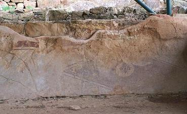
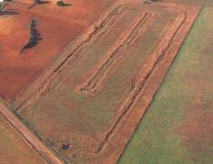
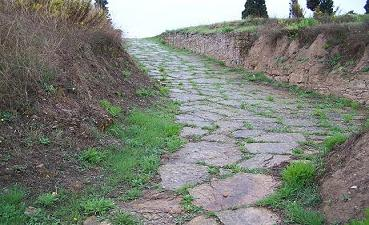
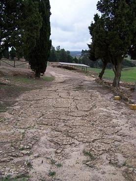
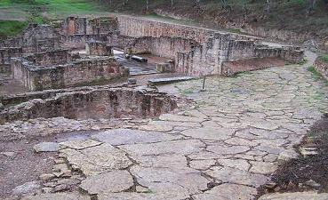
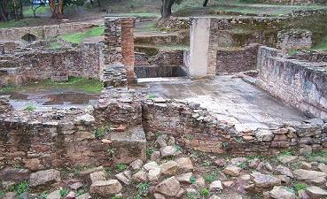
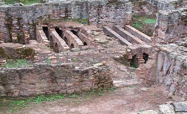
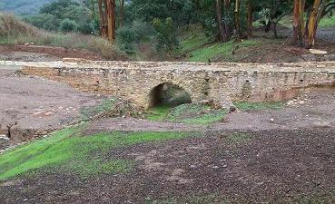
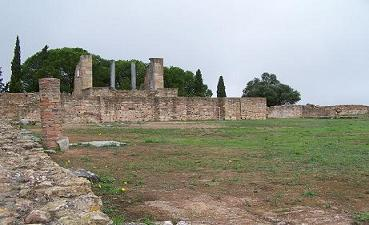
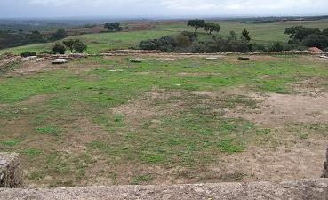

|
M I R O B R I G A
|
Miróbriga se localiza
en Santiago do Cacém.
En el 133 a.e.c., en la campaña militar de D.J. Brutus, los habitantes de
Miróbriga ya estaban bajo la influencia de Roma, un oppidum estipendiario.
En época de los Flávios, recibió el estatuto de derecho romano.
A
partir del siglo IV la ciudad empezó a entrar en un lento declive, similar
a otras ciudades del Imperio. Hacia el 712, las invasiones musulmanas la
ciudad ya estaba abandonada, siendo ocupado el cerro próximo, donde hoy se
localiza el castillo medieval. |
 |
En las ruinas de la ciudad romana se halla el único ejemplar existente en
Portugal de un Circo.
Mide unos 369 m x 75 m, se supone que se construyó en el siglo I.

En el "forum" se han hallado dos templos uno dedicado al culto Imperial
y
otro dedicado a Venus, también han aparecido zonas comerciales, dos
conjuntos termales, sistema de alcantarillado.....
El conjunto
termal de Miróbriga comprende dos edificios distintos las llamadas termas
este y las termas oeste.
El primer edificio data del siglo I y fue construido en el periodo de la
renovación urbana de la ciudad.
En el siglo II el posible crecimiento de la ciudad hizo que las
termas se quedasen pequeñas, y se construyeron las segundas
termas. Las termas romanas más
importantes de Portugal.
|
 |
 |
 |
|
 |
|
 |
El puente de un arco, en las proximidades de
las termas, unía el forum y el
circo.

El forum de Miróbriga fue construido probablemente en la época Flávia.
Tiene una dimensión de
20x25m. En el centro del foro se halla el templo, ha sido parcialmente
reconstruido en los años sesenta.
En el lado occidental del
foro se conservan las ruinas de otro edificio religioso, un altar consagrado a Venus y
fragmentos de una estatua de la misma diosa del amor y la belleza. El
forum está rodeado de un
área comercial.
|
 |
 |
La concentración de edificios religiosos en el foro y las
lápidas dedicadas a Escolapio hacen pensar en la posibilidad de que el forum de Miróbriga fuese un santuario y la ciudad un centro de
peregrinación con instalaciones destinadas a acoger y distraer los
peregrinos.
|